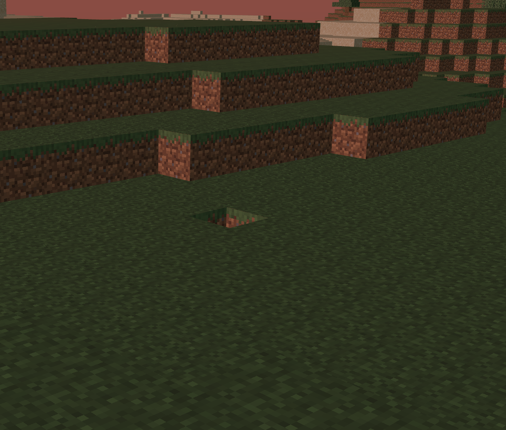
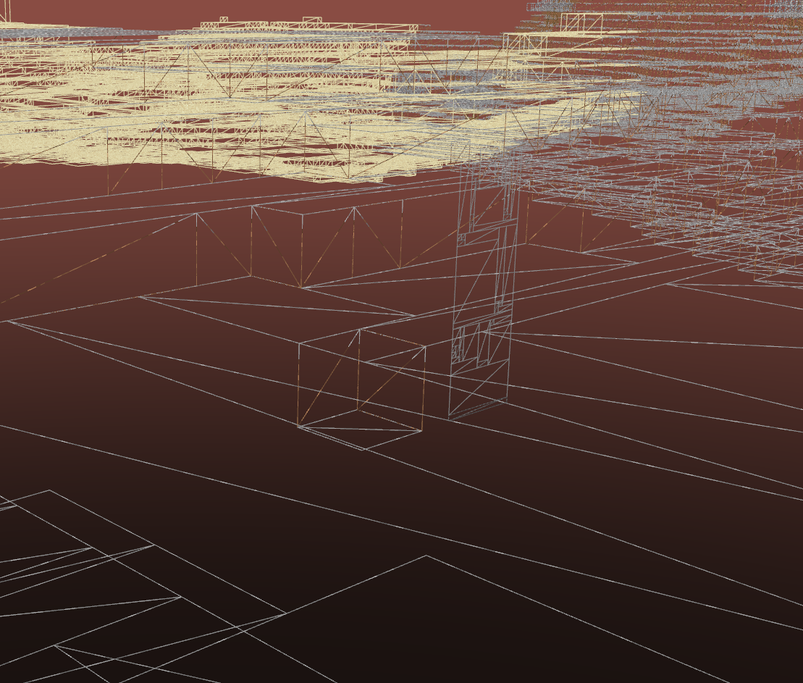
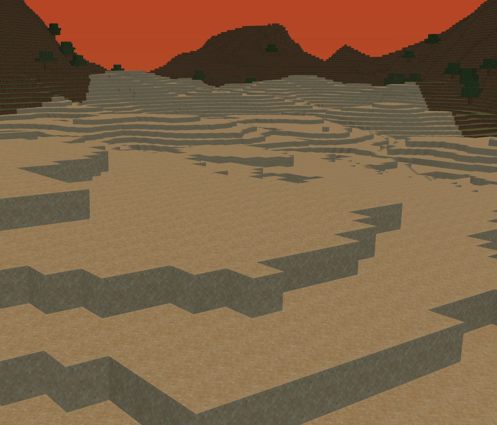
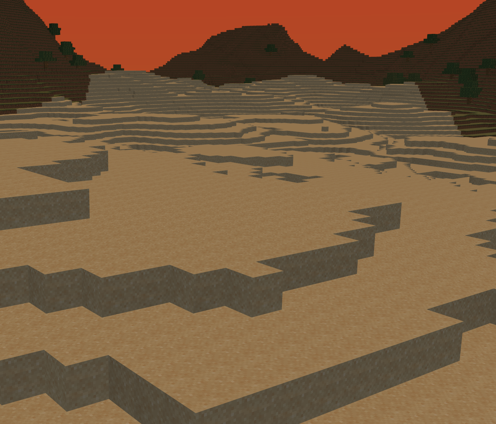
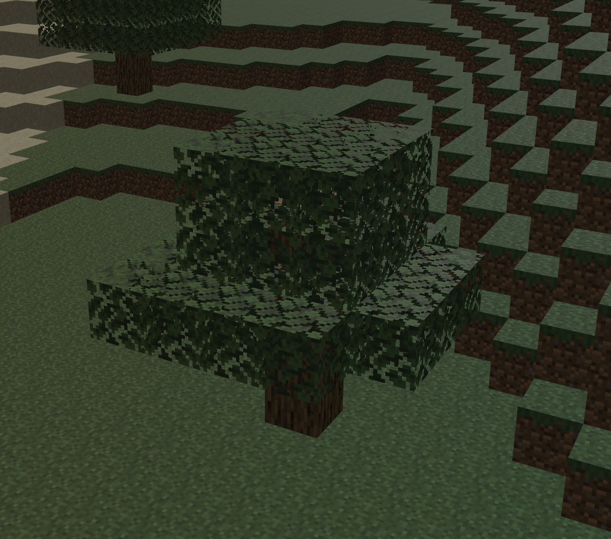
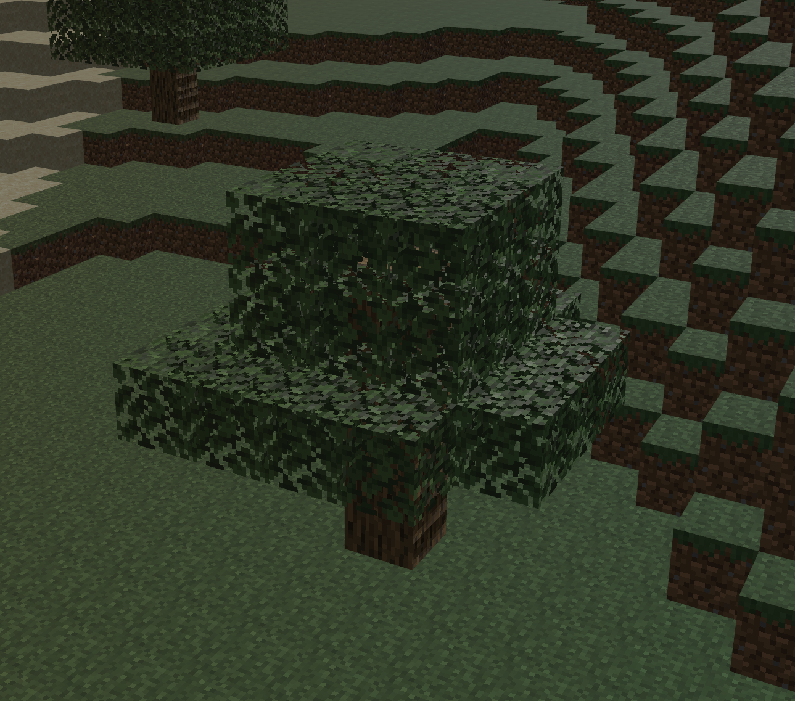
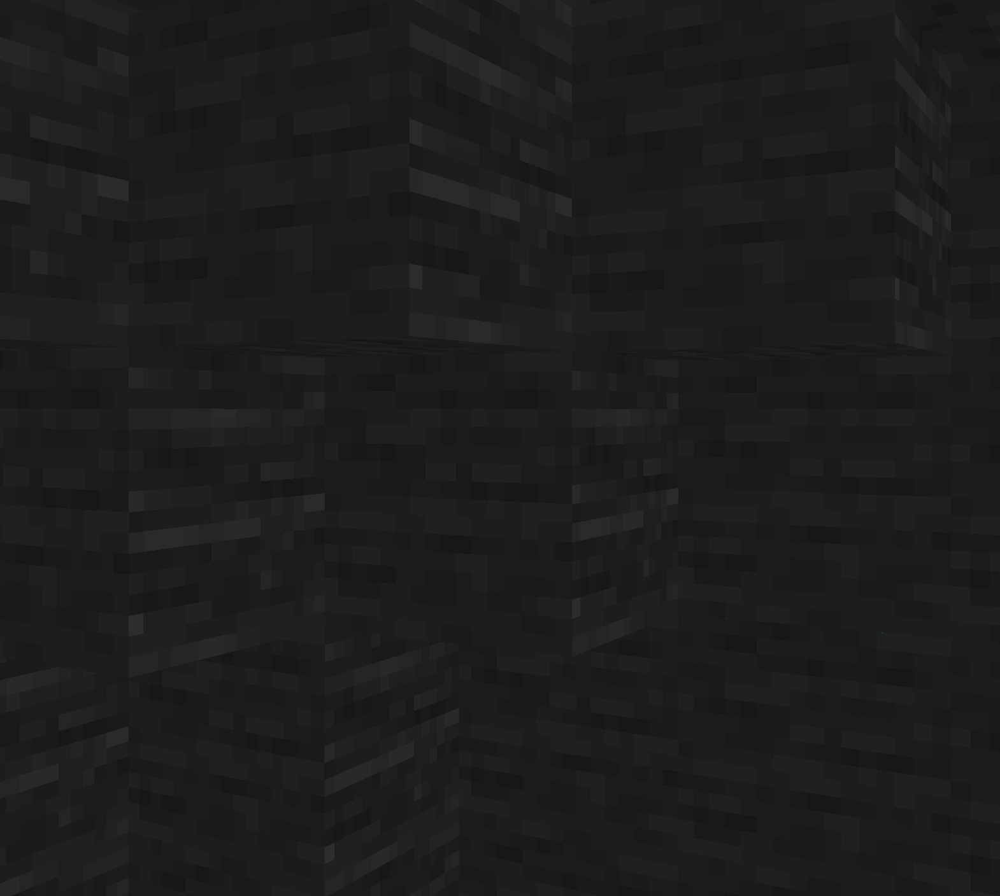
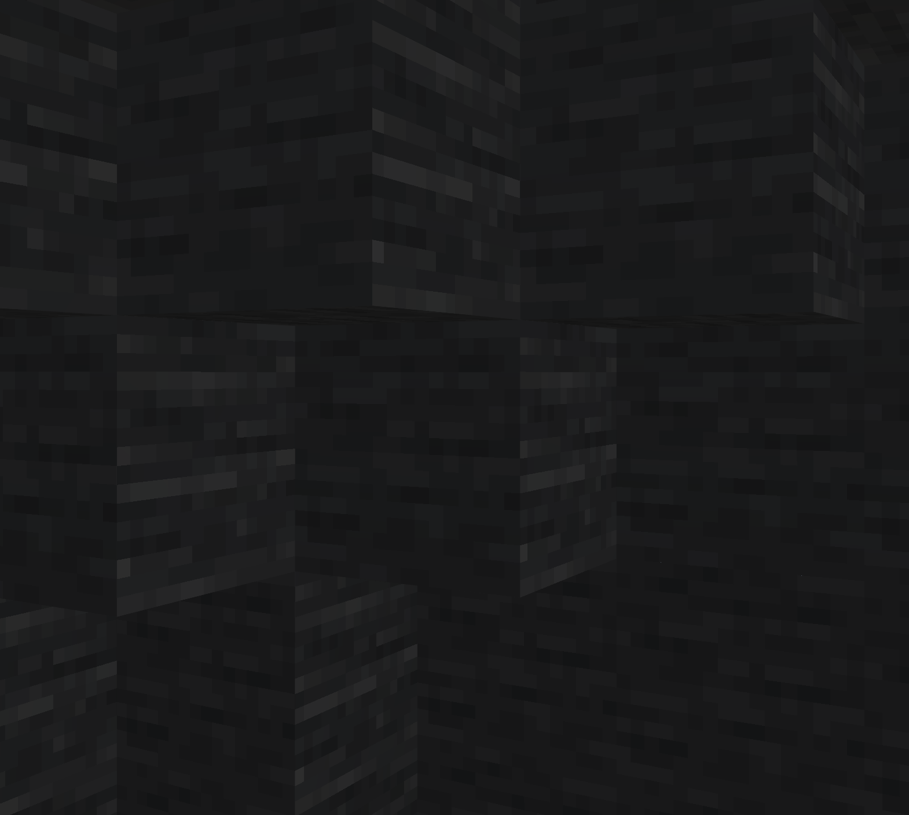
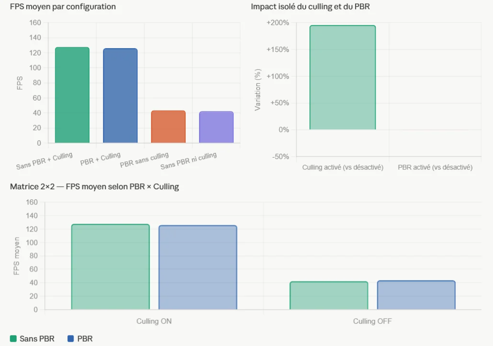

1. Optimisation Géométrique : Greedy Meshing
Dans un moteur Voxel naif, chaque cube génère 6 faces (12 triangles), ce qui sature rapidement le pipeline graphique. Pour pallier cela, l'équipe a implémenté l'algorithme de Greedy Meshing (Maillage glouton).
- L'algorithme parcourt les tranches du *chunk* et fusionne les faces adjacentes partageant le même matériau en de grands quadrilatères continus.
- Cette technique réduit drastiquement le nombre de vertices envoyés au GPU (Vertex Fetch) et diminue le surcoût du Fragment Shader, tout en préservant le texturage grâce à un calcul dynamique des coordonnées UV.

Maillage naïf : Chaque voxel visible génère ses propres faces indépendantes (coût géométrique énorme).

Greedy Meshing : Les faces coplanaires de même type sont fusionnées en un seul plan optimisé.
2. Pipeline de Rendu Avancé (PBR & Shaders)
Pour dépasser le rendu "flat" traditionnel des jeux de voxels, le moteur intègre un pipeline de rendu Physically Based Rendering (PBR) basé sur le modèle de microfacettes Cook-Torrance.
2.1. Éclairage Ambiant Hémisphérique (Hemispheric Ambient)
Plutôt que d'utiliser une lumière ambiante uniforme et plate, nous avons mis en place un modèle hémisphérique interpolant entre la couleur du ciel (zénith) et la couleur du sol (nadir) en fonction de la normale de la surface, apportant un volume naturel immédiat aux structures.

Standard : Éclairage plat, les zones à l'ombre manquent de volume.

Hemispheric Ambient : Les normales orientées vers le sol reçoivent des teintes chaudes rebondies, celles vers le ciel des teintes bleutées.
2.2. Normal Mapping (Espace Tangent TBN)
Pour ajouter des micro-détails sans coût géométrique, les shaders calculent l'espace tangent (matrice TBN) dynamiquement pour perturber les normales selon une texture dédiée, permettant à la lumière d'accrocher les aspérités de la roche ou du bois.

Surface lisse sans perturbation des normales.

Avec Normal Mapping : Le relief interagit physiquement avec la direction de la lumière.
2.3. Baked Ambient Occlusion (AO Vertex)
Calculer l'occlusion ambiante en temps réel (SSAO) est trop coûteux pour des terrains infinis. L'algorithme calcule donc l'occlusion lors de la génération du maillage en analysant les voisins de chaque vertex, et "cuit" (bake) cette valeur d'assombrissement directement dans les attributs des sommets.

Sans AO : Les angles internes manquent de contraste.

Baked AO : Assombrissement réaliste des cavités pré-calculé au niveau géométrique.
3. Environnement Dynamique et Performances
Le monde évolue de manière autonome grâce à un système de cycle jour/nuit dynamique interpolant les couleurs du ciel, de l'éclairage hémisphérique et la direction du soleil (gérant les ombres portées).
Le moteur intègre également un système physique gérant la détection de collision en deux phases (Broad-Phase spatiale et Narrow-Phase AABB) avec résolution cinématique (KCC) glissante contre les murs.

Mise à jour dynamique de l'éclairage ambiant lors du crépuscule.

Outils de profilage intégrés : suivi du temps de frame (ms), des allocations mémoires et des temps de génération des Chunks.